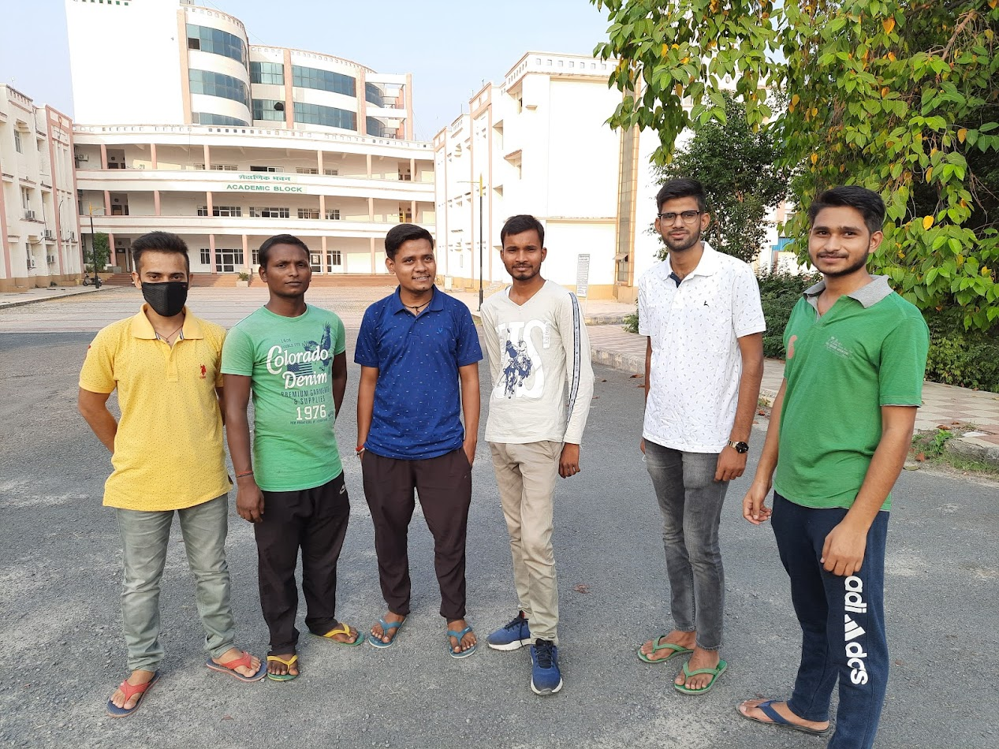
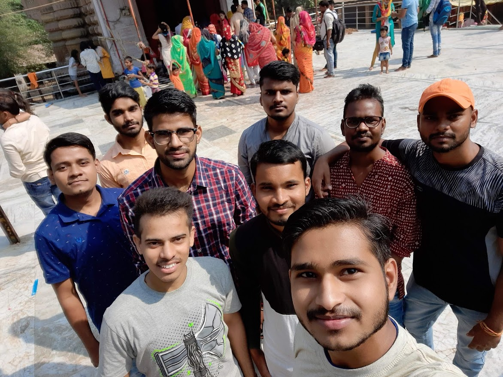
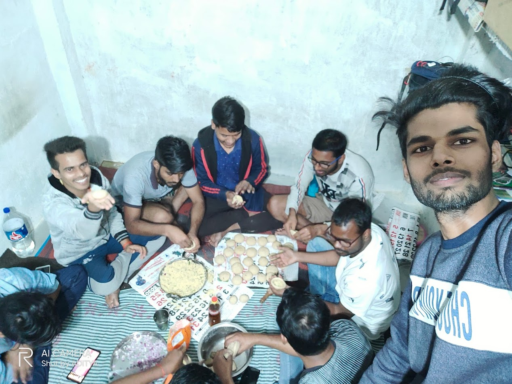

It is the day when I entered in fourth year officially. Few days before, our college notified us that we haven’t to go to college this year for semester registration. We have to do only submit fees online via SBI collect and fill a Google form made by our college admission cell. We have to enter our name branch, semester, subject names, fees receipt details etc in the form. In this semester, there are only five theory subjects instead of six. The subjects in this semester are Introduction to Smart Grid, Digital Image Processing, Optical Communication, Data Communication networks and VLSI Design. There is also a Project as lab in this semester.
26 Aug 2020, Wednesday
Our online class for the seventh semester has started from today. Our CR sent us the time table for this semester. Rajeev Sir has taken 'Optical Fiber Communication' subject and Ashwini Sir is teaching Data 'Communication & Networking', Swati Maurya Ma’am will teach 'Introduction to smart grid'. Like last semester in this semester also Ashwini Sir will upload the videos link on his website for his subject and also will take unit tests via his website. Rajeev Sir has announced that he will take class regularly from 4pm to 5pm every day via Video Call at Google Meet App.
13 Sept 2020, Sunday
Today is my birthday 🎂. I am at home this birthday after 4 year of time. I have got best wishes from my parents, siblings, relatives and my dear friends. Last night when I was going to sleep, Prince texted me and told that he have remembered my birthday and he was going to tell every of Jai Bhavani member. He texted in group and didn’t let me sleep (Usually I sleep at 10 in night at my home); he kept me busy till 12 midnight by texts and phone calls. Prince, Aditya, Shiv Kumar, Abhishek Patel, Kamendra & Prateek had planned an online birthday celebration for me. At exactly 12am, they made a Google Meet video call and wished me birthday and after half an hour chat I went to sleep. I had to wake up early in the morning because there was a Puja function in occasion of my birthday at my home. When I was in the Puja in morning today, in the span of 3 hours I had 23 missed calls from my different friends and family members; after I become free I phone called everyone and get wishes and blessings.
16 & 17 Sept 2020
As I mentioned earlier, there is a Project lab in this semester. So Amit Chauhan sir has chosen his favourite 15 students from our class for the leader of the Project group but every student were unhappy from his pick. When Students complaint about that then he told us that who is interested in becoming group leader, they can send their name. I gave my name for group leader and he selected me. But there arises a problem, 3 persons are selected for group leader (Aditya Verma, Shiv Kumar and I) from Jai Bhavani group. Later, Shiv Kumar has withdrawn his name. I and Aditya formed our team by dividing the Jai Bhavani members equally in both groups. Prince Kr Gupta, Shiv Kumar, Sagar Maurya and Prabhat Kr Prajapati are my group mates for project lab. Abhishek Patel, Parimal Srivastava and Kamendra Kumar are in Aditya’s group. Rajeev sir is our guide for project and it was my sincere wish. We have discussed with Rajeev Sir and chosen Web Development as topic for our project.
Today is 17 September. Amit Sir emailed us a Google meet link. He has invited only the leaders of the project groups. He will take a meeting at 12:00 noon to discuss about the project. He will also discuss about that who else are interested in being group leader and also about the topics and content of the project.
8 Oct 2020, Thursday
Today is birthday of Aditya Verma. We all friends forgot his birthday. Two days before, I remembered but today I forgot. We didn’t wish him at midnight. Usually, he remembers everyone’s birthday and wishes them first. In this entire lockdown, whenever there is anyone’s birthday he makes a plan to wish him and give him surprise. I am really feeling shame on me for that 😥.
12-13 Oct 2020
I and Prateek were discussing since last few days to go to Tirwaganj to see condition of our room, our luggage and goods. We also have to submit our scholarship form at our college. I am facing problems in doing programming so I will also bring my laptop, which was left there because of not going there in this lockdown. We planned to go there by bus because the train had not started yet even after lockdown ended. I am going there after 220 days.
I took bus from Ballia at 4:00 pm on 12 October and reached at Azamgarh till 7:00 pm. I stayed there at Prateek’s home for an hour. I met his family and they offered me dinner. I brought my dinner from but I had to eat there. Then, we took bus from Azamgarh to Lucknow and we have reached our room before 5:00 am in next morning. When we arrived here, our room was full of dust and garbage. We worked hard for 1 hour and cleaned our room. After some rest I went to 'Jai Bhavani' Headquarter and meet my friends after 220 days.
15 Oct 2020, Thursday

We had to link our bank account to AADHAR for scholarship, so we all who are at Tirwa had gone to CBI bank in Medical College today for AADHAR link. It’s been a while I hadn’t done party with my friends. So, we planned to do chicken dinner party tonight at "Jai Bhavani Headquarter". We can’t eat chicken from tomorrow because Navratri is starting from 17th October so we decided to eat today. There is not every member of our group some are here and some are at their home due to this sinister Pandemic. We are only 8 persons in this dinner party. Like previous times, everyone had given a specific work and they did perfectly. Abhishek Patel cooked chicken and it was very delicious and awesome in taste as always. He is pro in cooking chicken.
After dinner, we were gossiping for an hour then I introduced ‘Among US’ game to them and installed the game in everyone’s phone. Among Us game is most played game in 2020 lockdown period. We started playing Among US at 12:00 am and played till 4 O’clock in the morning. Whenever I became Imposter in the game I win the game because I was playing silently and never let others to identify me.
17 Oct 2020, Saturday

Today is the first day of Navaratri Puja. I have fast today so I discussed with my friends to go Annapurna temple. Early in the morning I bathed and become fresh and told my friends to become ready. Prateek woke up late and he was doing very late to get ready so all my friends came to my room to take him early to temple. We went together to Annapurna temple by walking and gossiping. We did worship and spent some time there then we went to another temple named Dauleshwar Mahadev Mandir and then came back to our room by foot. We didn’t take auto rickshaw by any side and covered all distance walking by foot. Prateek have also fast and we had not eaten anything till now so he was very tired of walking too much. When we came back to our room we started playing ‘Among us’. It is very funny, amazing and unique game, I have played till now.
20 Oct 2020, Tuesday
The works for which I came here at Tirwaganj have completed. I have seen the conditions of my room. I have submitted the Scholarship form and done the works related to it. I also have met Rajeev Sir to discuss about the project. I have also met my friends and have a small party with them. So, I decided to go back to home. Prateek is also going to his sister’s home at Kanpur. While he was packing his bags then he saw that he have the Cricket jerseys of his brother which is not using by him so he decided to give away it to me and other friends. I took the T-shirt of Royal Challengers Bangalore of 2017 season; His brother was in RCB for two years (2016 & 2017) in IPL. Satyam Singh, Shiv Shakti & Neeraj took jersey of Karnataka domestic teams.
I and Prateek came out of the room together, we took auto rickshaw together and he went to Kannauj to take bus and I came to Agra-Lucknow Expressway to take bus to Lucknow. After reaching Lucknow, I will take bus to my home city Ballia.
25 Oct 2020, Sunday
Today, there was exam of TCS NQT. It is for the recruitment of fresher for the software engineer role in Tata Consultancy Services Company. I have registered in it with my classmates and friends. I had registered for online exam from home. The exam was from 8:00 am to 11:00 am in the morning. My dad arranged Wi-Fi for the exam. I was very excited and frightened for the exam. It was the first step towards my job career. When I logged into the website for the exam, the server of TCS got crashed and I was unable to give the exam. Whenever I was trying to login for exam, it was getting close often. I was very panic, I emailed them, used chat- bot to identify the problem, asked my friends but I was unable to give the exam. My first attempt to get job failed.
09-11 Nov 2020
Our first class test for this semester had been announced between 5 to 7 November, but due to some reason it was postponed for 9th to 11th. Like last semester, this semester also have online exams. Teachers had sent the exam links (either Goggle classroom link or Google form link) and we had to answer the questions by submitting the pdf or selecting the multiple choice questions. Teachers had put less time and gave us more works to avoid the cheating. But we were one step ahead them, we did a little cheating in this exam also via conference calls and WhatsApp. I think, online exams are the most liked thing for the modern day students.
One good thing happened in pandemic time, which was IPL-2020. Usually IPL takes place during April & May months but this year IPL was postponed due to lockdown and then later it was decided to be held in September to November. On 10th November, there was final match between Mumbai Indians and Delhi Capitals. Mumbai beat Delhi to win their Fifth title. Mumbai Indians is the only team to win titles more than three times, Mumbai have also become first team to top the points table 4 times. Mumbai Indians is also only team to win all kind of the IPL awards. I have got a chance to tease my friends again.
12 Jan 2021, Tuesday
Today our university AKTU have released our time table for our odd semester exams. Generally, our odd semester exams start in December but due to COVID-19 is starting about two months late. Our exams are going to start from 17th Feb. Although it is a tentative schedule, it can or will change in future. According to current schedule out exams are going to be finish in only five days. Which are on 17th, 18th, 20th, 22nd and 23rd.
Our classes in this semester have not run properly that’s why I have not read and learnt all the theories and studies. So I was thinking of coming Tirwa after 5th January but one of my friends Prince had birthday on 3rd January. My other friends also requested me to come for his birthday so I reached here on 3rd January. My roommate Prateek has not come here yet so I am staying and eating at my friend’s room i.e. at Jai Bhavani Headquarter. I go to my room daily for bath and for other works and then I come here to live and preparation for the semester exam.
30 Jan 2021, Thursday
I have applied for Wipro NLTH 2021 recruitment drive. The exam for the drive was today. The test was of 128 minutes from 12:30 PM today. It contains different types of questions like Quantitative Aptitude, Reasoning, Coding and Essay Writing. Last time on October 25, when I was trying for my first exam for TCS NQT 2020, it failed. Prateek and Neeraj have been selected in TCS by that exam but I was unable to take exam that day. Today it did not happen so, I took the exam successfully. Prince, Rohit Maurya and their roommates had also applied so I had gone to his home for exam. We did some cheating there, helped each other. The exam was not too hard but there were more questions and time was short.
07 Feb 2021, Thursday
There was examination of GATE 2021 today. I had applied for electronics engineering subject. My some friends also had applied for it and we have got the examination centre at Kanpur. Shiv Kumar suggested us to go there by reserved car instead of public transport. He with his landlord booked a Mahindra Bolero car. There were 4 persons who had gone by car and at time of retuning we were 10. Shiv Kumar, Rohit Maurya, Abhishek Singh & I had gone to Kanpur and Abhishek Patel & Kamendra Kumar were supposed to come with us but some of our colleagues met there so they joined us. Rohit, Shiv Kumar & Abhishek had prepared hard for exam but I was going for only giving exam. I had not completed all syllabuses so I was going to just take exam experience. The exam was tougher than expected; I am guessing that I will only get qualifying marks because of not good preparation and tougher exam. My other friends were also shocked by seeing the difficulty level of the exam.
The exam was in evening slot from 3:00 pm to 6:00 pm. When the exam got over, we with some friends from our exam venue went to other’s exam venue to take with. Prince, Prateek and some other Jai Bhavani members had not applied GATE so they were at Tirwaganj. We all had decided to do chicken party, the one who were at Tirwaganj were cooking. We all were returning by listening songs, singing loud and doing fun. When we were at midday our car stopped and driver was unable to start. We all get off from car tried to start by pushing it but it couldn’t. After one and half hour of struggling, the driver took help of local people and started the car and we reached home at 12:00 am midnight. When we returned the chicken was ready and we enjoyed the dinner. And now we are going to sleep.
17 Feb 2021, Wednesday
Today is my father’s birthday and also there was project presentation of Electronics fourth year students. I wished him early in the morning and my parents blessed me best of luck for the presentation. It was an online presentation via Google meet app. Our department teachers were taking our presentations. Our group was at 8th serial number. I and Prince had made PPT yesterday for our project which is on the topic “AI-based E-commerce Website”. The presentation had started from 11:00 AM and when there was our group’s turn I was unable to represent my PPT due to some technical issue Then Amit Sir invited next team to present their, after that Ashwini Sir announced lunch break for an hour. At 3:30 in the evening, we presented our project and the teachers finished it quickly because there were some more groups who have to do presentation.
23 Feb- 03 Mar 2021
After intense negotiations between students and university for online exams and after many changes in the exam schedule, our semester exams were decided to start from 23 February. There was only one day gap between each exams which were on 23, 25, 27 Feb, 01 and 03 March. We were not allowed to enter in the class without mask and sanitizer. This time we are sitting alone not with any other branches due to the COVID-19 safety measures. On first day there was examination of Introduction to Smart Grid. We had not taught all subjects in this semester so it seemed very hard when we were studying the lessons. VLSI Design and Digital Image Processing were two most difficult subjects for me in this semester. I had gone to Abhishek Patel’s home (Jai Bhavani Headquarter) to study these subjects. Everyone studied different units and explained to others for learn and quick revise. The question papers were not too hard and all the exams passed easefully. Every branch’s exams had been over on 03rd March except CSE, they had their last exam on 05th March.
06 Mar 2021, Saturday

Our theory exams are over now and there will be exams of our juniors. Hence, our practical exams will be after their exam. We are free now so we had gone to play Cricket at college. In the evening, we stayed at Shiv Kumar home which is in the neighbour of our college and planned to cook chicken and do party. Neeraj Singh was also giving his birthday today but I am going to miss that. Prince went to market by bike and brought the goods. Abhishek Patel cooked the chicken and we distributed the other works among us like always. We slept at 03:00 Am in the morning after a lot chattering. We woke up in the morning and went to play Cricket again.
Today is 12th March; we did one more big party at Shiv Kumar’s. We all cooked ‘Litti-Chokha and Gajar ka Halwa’ while making fun of each other. None of us knew how to make it perfectly but we did and it was very good in the taste. And we repeated same routine as last day means played cricket in the morning till noon.
"The days between 3rd March and 20th March are most beautiful, joyful and entertaining days for Jai Bhavani boys. We are enjoying daily by playing cricket, wandering in Tirwa during nights, late night debates and teasing each other and doing vegetarian and non-vegetarian pending parties of birthdays which were pending since the lockdown in 2020. We are free from all tensions of reading and college now".
24 & 26 Mar 2021
Today (24th March), there was our external practical exam of Optical Communication lab. It was not decided earlier, Umar Singh CR sent the notice in today morning that there was our exam today. We had not done any practical in this semester due to online classes. We had to write one practical and had to give viva, we wrote it by cheating with mobile phone. The ma’am, who had come for the viva was looking exactly like Rashmika Mandhana actress. She asked some questions from our syllabus, some about our future goals and some other questions.
After viva voce, Prince had gone to Amit Chauhan Sir to negotiate about other exam to be happened today because CSE and other branches had their last exam today. But Amit Sir was in anger and he did not hear a word and started scolding him. The other’s theory exam ended after us but their practical ended before ours, it is because our teachers were not much active about that. It was disappointing because they are free now and we are not.
Today is 26th and there was our last practical exam. The teacher, who was taking our viva voce, was in hurry. He ended 40 student’s viva in just 20 minutes. And when there was our turn, he called all of the remaining students in a class and gave a small lecture about himself and asked some casual questions and then he let us go without asking any subjective questions. It was the end of our seventh semester.
27 Mar 2021, Saturday
Although our all of the exams are over so we can go home now to celebrate Holi festival. We didn’t play Holi this year with each other because some are gone home and Aditya has fever and others also did not wanted to play. Shiv Shakti contacted me to go home with him and I agreed. He had booked our train tickets. He was doing Tatkal ticket and he got only two tickets and but we were four persons (I, Shiv Shakti, Neeraj Singh and Pallavi Umar). So he went to Kannauj railway station and bought two waiting tickets. Prateek had gone to his home on 25th, he was asking me to go home with him but I denied because he is now living in Ambedkar Nagar and then from there I had to take another bus to go home alone. Our train was at 4:50 PM from Kanpur Anwarganj Station.
Our seats were in two coaches, one in sleeper and one in another AC A1 coach. When we enter in the train we exchange a seat from a stranger and sent him to AC coach. We did talk about whole night. We had now reached at Mau station at 3 AM and our journey was up to here. After waiting some time at station, we then went to bus stand. Pallavi Umar took an auto to go her home; Neeraj took bus to go Ghazipur. Shiv Shakti and I had to wait for an hour. One bus came and we caught it but it was so much crowded and we had to go Ballia by standing. I had reached home at 7:00 in the morning.